Concept redesign Snackpass
find it before you're hangry
redesigning snackpass search so students can find food by craving, price, deals, and distance, not just by name.
overview
students reorder from the same few places because finding something new takes too long.
Snackpass works if you already know the store. there's no way to ask "what boba is close and on sale right now?", so we added a filter button and moved search back to the top.
solution
search is back on top, and filters are one tap away.
home screen
before
search hides behind a small icon.
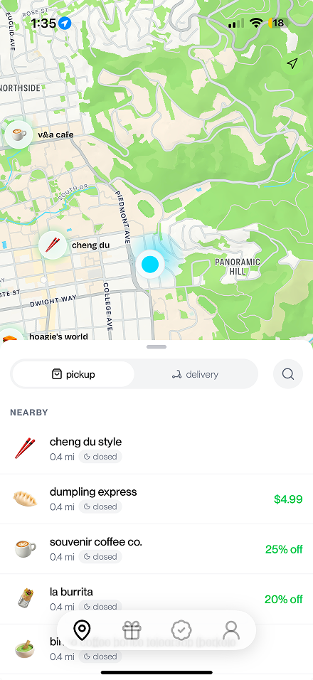
after
search bar on top, a filter button, and ratings. "see all" opens the full nearby list.
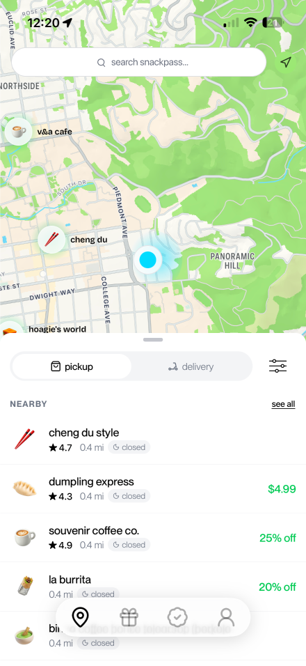
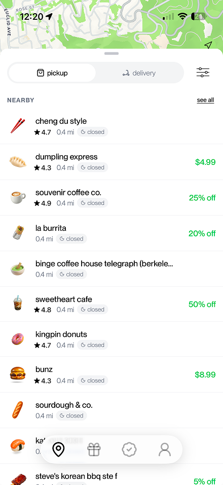
search
before
an empty page. you need an exact name.
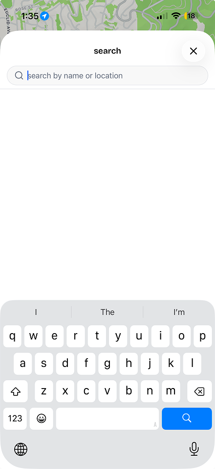
after
recent searches and craving categories.
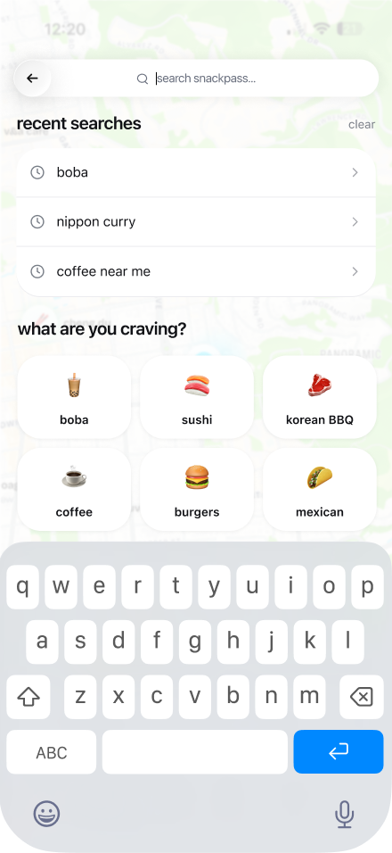
filters
new
cuisine, price, discounts, distance, availability.
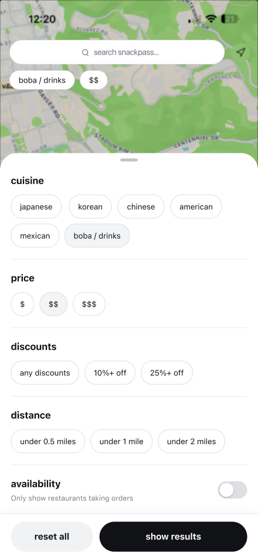
result
results, with the active filters on top.
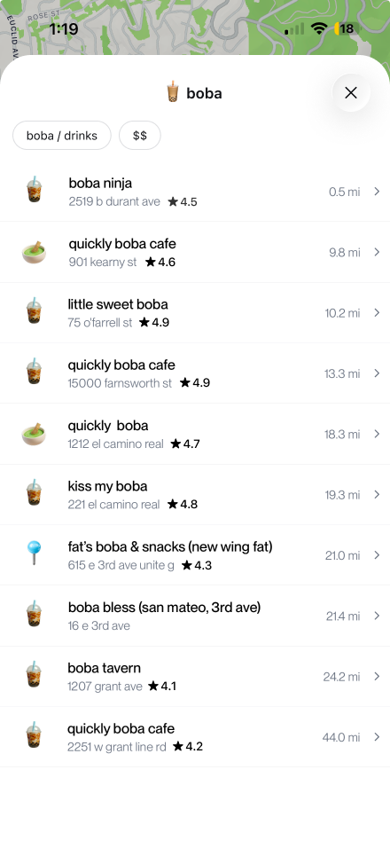
core flows
from craving to order, without knowing a store name.
i want something specific, wherever has it.
tap filter→cuisine, price, deals, distance→results→order
i don't know what i want yet.
tap search→pick a craving→order
i know exactly where i'm going.
search bar→type the store→order
research
distance decides, and unhappy users don't explore.
we surveyed 32 Berkeley students and interviewed 8 more about the last time they ordered.
7/8interviewees pick food by how close it is
5/7unhappy users rarely or never try new places
29/32find stores easily, so we kept the page clean
what students asked for
n = 32, people could pick more than one.
survey response“genuinely difficult to find new places via Snackpass (you have to have an exact name in mind).”daily user
interview“i'm not really a discount person. i think it is more so what's familiar.”3rd year, orders 3× a week
explorations
we dropped the discounts tab students asked for.
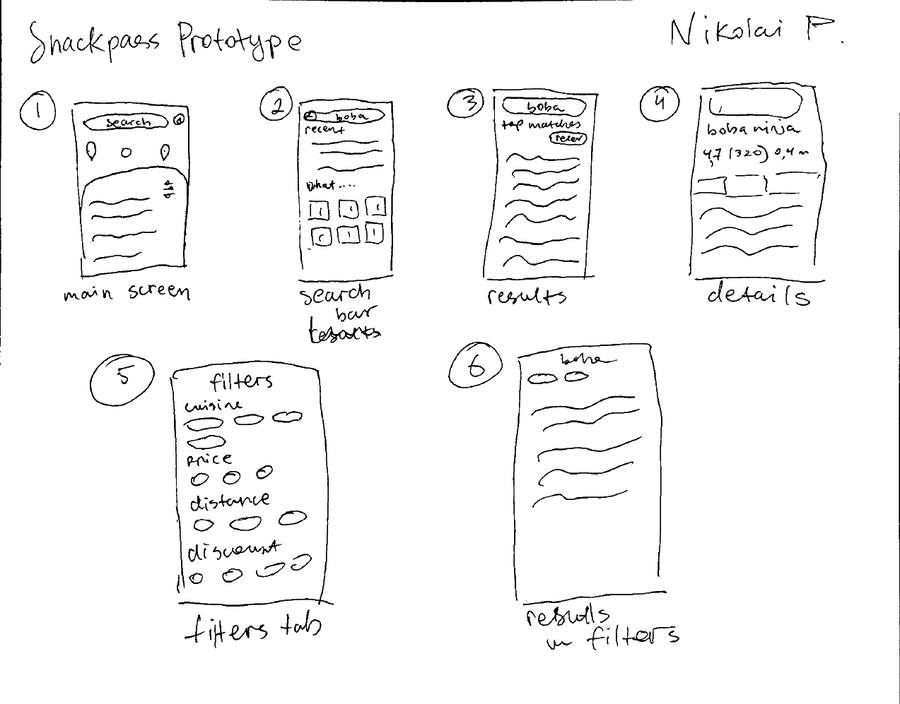
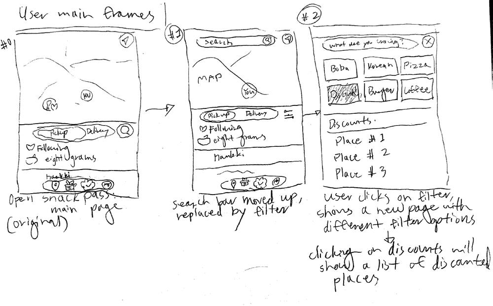
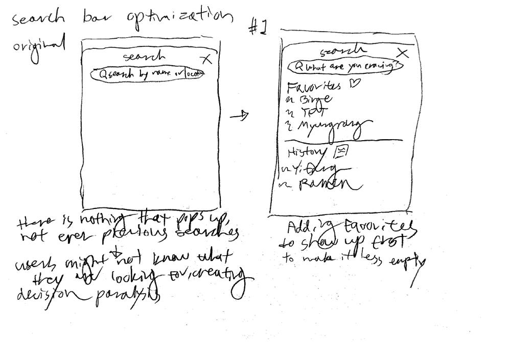
droppeda discounts tab21 of 32 wanted it, but it adds a fifth tab, and many users don't order by deals.
keptdiscounts as a filterdeal-hunters get it in one tap. everyone else sees no clutter.
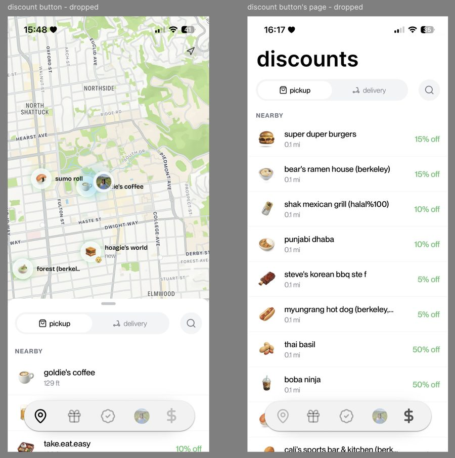
testing
testers liked the filters, but "boba" missed the milk tea shops.
we tested the Figma prototype with 3 students.
what we foundwhat we'd change
"boba" only matched stores with boba in the name
→tag stores by menu, not by name
6 cuisine chips won't scale
→a dropdown or a "more" button
all 3 called out price and discount filters
→keep them at the top of the sheet
usability test“i like how the search bar is right at the top now, it's way easier to find stuff.”tester 2
usability test“having filters adds much more accessibility for me.”tester 1
design decisions
three choices, and what we turned down.
one filter sheetcravings, deals, and distance in one place. handy when your usual spot is closed.
search back on topon Android, a "rate this store" card covers the search icon completely.
promotions as a filternot a tab, so the main page stays clean for people who don't hunt deals.
reflection
next time, we'd watch people use the app.
constraints
- three weeks
- 32 responses, our goal was 50
- our first time in Figma
next steps
- watch people search in person
- survey each class year evenly
- pin down the exact pain points